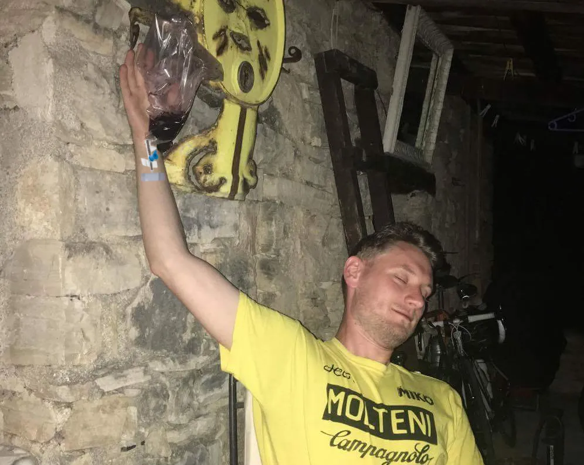

Kaptajnen, Løjtnanten – og Kampen om Montage De Lure

L’Etape du Tour tog hårdt på løjtnant Kasper. Et par dage efter løbet sprang han restitutionsrulleturen over, og forblev hele dagen ved poolen. På 3. dagen led han voldsomt på en vandcykeltur på Lac d’Esparron. Det tegnede ikke godt…
På 4. dagen skulle der trænes på det fra Camp Molteni nærtliggende Montage De Lure (1755 m. 1012 højdemeter, 17.7 km á 5,7 %). Ved ankomst til byen Saint-Étienne-les-Orgues, havde Maria og løjtnanten den frækhed, at betvivle Kaptajnens navigation – så Kaptajnen stikker fra bunden af den 17,7 km lange stigning. Der bliver trådt et godt gear (42-24) og farten er høj. Løjtnanten og Maria var sat.
Efter små 10 km med nogle lede 9%-stykker ser Kaptajnen tilbage i et hårnålesving; Løjtnanten er på vej op! Kaptajnen må grave dybt og får endda smækket den op på stor klinge på et 4%-stykke – men det hjælper ikke. Løjtnanten nærmer sig bagfra.
Oppe over trægrænsen på den skallede del af Montage De Lure, med godt 3 km til toppen, får Løjtnanten indhentet Kaptajnen. Et øjeblik ser det ud som om, at Løjtnanten sætter Kaptajnen, men Kaptajnen har sparet lidt kræfter, og kan svare igen.
Kaptajnen og Løjtnanten ruller sammen over Col Montage De Lure. Løjtnanten havde genvundet sine sine ben – og resten af sæsonen ser lovende ud.
Men samme aften, måtte der tages hårdhændet metode i brug, for at genoprette løjtnantens væskebalance: ren provencalsk rødvin indtages intravenøst.

Løjtnanten er tilbage i Danmark, har nu genvundet væskebalancen – og er i storform.